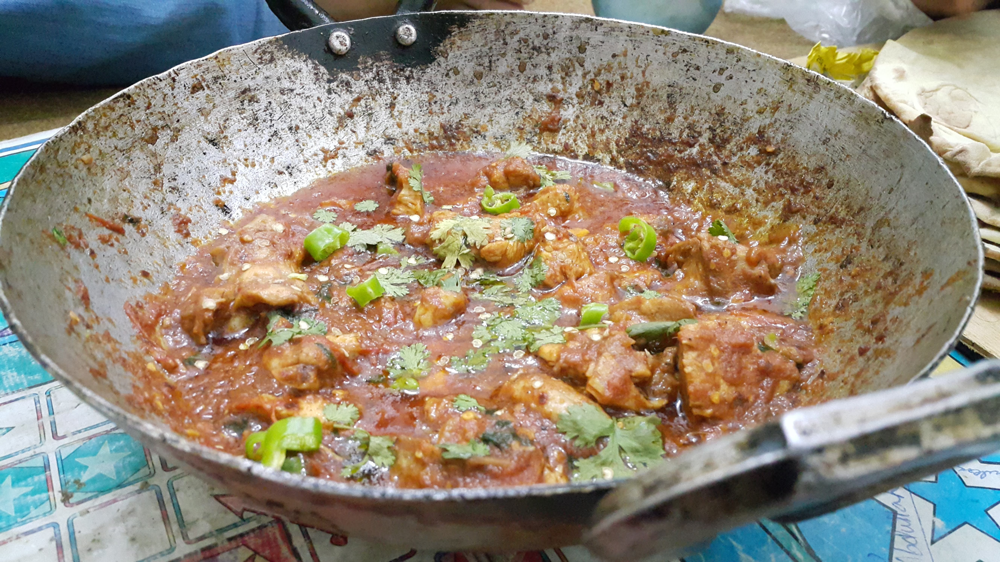

Pakistani Chicken Karahi

Description
Pakistani Chicken Karahi is a fast-paced, high-heat stir-fry featuring juicy chicken pieces coated in a thick,
savory tomato masala. Named after the wok-like vessel it is cooked in, this dish relies entirely on ripe, fresh
tomatoes rather than onions to form its deep, luxurious base. The signature texture comes from a intense frying
process known as bhuna, which concentrates the natural juices, blisters the fresh chilies, and splits the oil
from the gravy. Every bite offers a sharp contrast of warm black pepper, intense garlic-ginger aromatics, and a
bright, zesty crunch from raw julienned ginger and fresh coriander.
Ingredients
- ½ cup sunflower oil
- 1 (3 pound) whole chicken, giblets discarded, cut into 12 pieces
- ¼ cup water
- 2 teaspoons ground cumin
- 1 ½ teaspoons salt
- 1 ½ teaspoons ginger and garlic paste
- ½ teaspoon red chile powder
- ¼ teaspoon ground turmeric
- 6 ripe tomatoes, roughly chopped
- 4 green chile peppers, finely chopped, or more to taste
- 1 bunch fresh cilantro leaves, finely chopped
Steps
- Heat oil in a large pot or karahi over high heat. Add chicken pieces and cook until starting to brown, about 5 minutes. Add water, cumin, salt, ginger and garlic paste, red chile powder, and turmeric; cook and stir until fragrant, about 30 seconds.
- Stir tomatoes and green chile peppers into the pot. Reduce heat to low, cover, and cook until chicken pieces are no longer pink at the bone, about 30 minutes. An instant-read thermometer inserted near the bone should read 165 degrees F (74 degrees C).
- Sprinkle cilantro leaves over chicken and cook until leaves look slightly wilted, about 30 seconds.